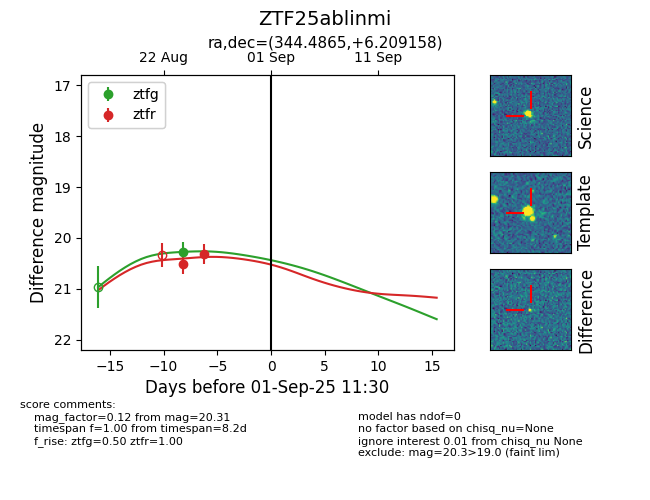

Target ZTF25ablinmi at 2025-08-26 11:05, see:
FINK: fink-portal.org/ZTF25ablinmi
Lasair: lasair-ztf.lsst.ac.uk/objects/ZTF25ablinmi
ALeRCE: alerce.online/object/ZTF25ablinmi
alt names
ZTF25ablinmi (ztf,fink)
coordinates:
equatorial (ra, dec) = (344.4865,+6.20916)
galactic (l, b) = (79.2754,-46.81635)
photometry
last ztfg=20.27, ztfr=20.31
1 ztfg, 2 ztfr detections
